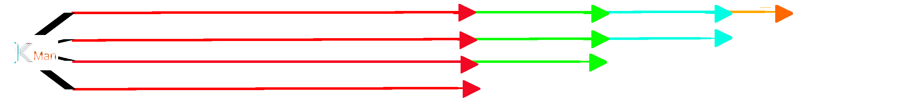

[STABLE]: 1.0 Stable release
1. Windows support
2. Beautiful UI & Better UX
3. Script improving
4. Bugs fixes
The executable files will avaliable on Google Drive, the source will be uploaded on GitHub
Design for [BETA] KodePas 1.1

Branch

Our idea about KodeMan branches
LATEST BRANCH: The newest release of KodeMan packages (source code) on GitHub and executable files on Google Drive
TESTING BRANCH: Testing version of KodeMan, source code can be accessed on GitHub
STABLE BRANCH: The latest stable release of KodeMan with LTS marked on Google Drive
OLDER BRANCH: The older releases' source code with ZIP packages that can be found on Google Drive and no longer support
Latest version: [STABLE] 1.0